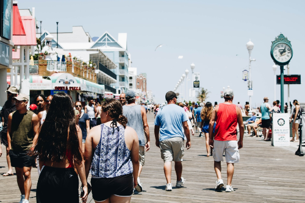

Target Audience
The audience this web site would target wouls be anyone try
to know the forcast for the up coming week. Mainly the people of Idaho
such as farmers and locals.
Person #1
James St Patrick
This is the typical everyday farmer that would be interested
in knowing the weather conditions everyday.
Scenarios: the waether to know if he would need to
use a rain coat today at work. To know and help with the caring of his
crops
Person #2
Local population and Tourist
These are individuals that live in and around Idaho or for even travellers/visitors
wanting to know the current and future weather conditions for Idaho area.
Scenarios: Checks the waether to know if he/she or they would need to
use a rain coat today at work or what would be the best time to go for a walk.